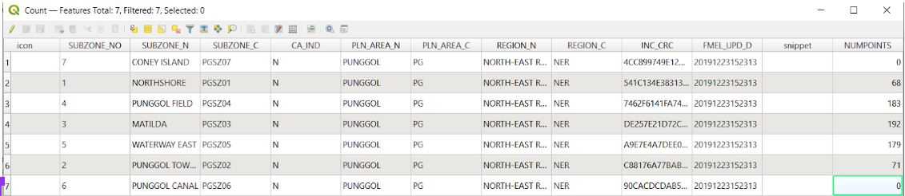

4. Lesson learned and recommendation
Based on our team’s observation, based on the closure of the selected primary schools, in some subzones such as North Bridge road and Crawford where Stamford Primary School is located, there are residences residing in the area. As a result, the decision to close Stamford Primary School will have an impact on both existing and potential students who are studying or planning to study there, as existing students will be required to travel to the planned merged school, while potential new primary school students will be required to either enrol in the merged school or enrol in another available Primary School that is closer to their home. The arrangement to close or merge primary schools will decrease accessibility and the equity of access will prove to be imbalanced (inequity) for the students affected by the closure of their Primary School that is due to be merged with another school.
Therefore, we realised that in order to provide equity of access for all existing and potential primary school students in Singapore, our group finds that the Ministry of Education could plan to relocate or open more schools within a 1-2km buffer range so that the primary school students will still be able to gain access to quality education without the fear of travelling a long distance and this includes those areas that are lighter in colour in terms of the density to ensure that it’s evenly distributed across the island. In addition, it will be advisable to close down the schools that are clustered together as the schools that are spread around will be able to service the students living and studying in the area.
As for the recommendation for JC, considering the limited number of JC schools that are available in Singapore, the closure of the 6 selected Junior Colleges will affect students who are studying or would potentially be studying in a Junior College in the future as the distances required to travel to the next nearest JC would increase significantly. For instance, the closure of Jurong JC may have an adverse impact on the residents living in the western areas of Singapore (Tengah) in terms of the time taken to travel to the JC, especially if there is a growing demand for students wanting to study in a JC at the west side. As there are existing residential areas located in the west area such as Boon Lay, Pioneer and Joo Koon, there will still be demand for students who would eventually want to study in a JC. Hence, we firmly believe that the JCs that are servicing the student population living at the edge of Singapore should not be closed down.
With that being said, this brings us to our next point we have highlighted an example of a subzone where there has been an increase in the number of residential areas over the years in Punggol. Currently, there are about 693 residential buildings (num points) which is a substantial amount. However, due to the lack of sufficient planning for future changes that might occur (e.g., a Steep increase in residents living in developing subzones such as Punggol since the development of residential buildings in the area), there has not been an increase in JCs in Singapore to accommodate the demand in that area. Based on this scenario, if there is no appropriate planning made for developing subzones such as Tengah, the future residents that will be living in the area may face a similar issue in the near future due to the closure of Jurong JC ahead of time and they might need to travel to the next nearest JC such as Jurong Pioneer Junior College.
